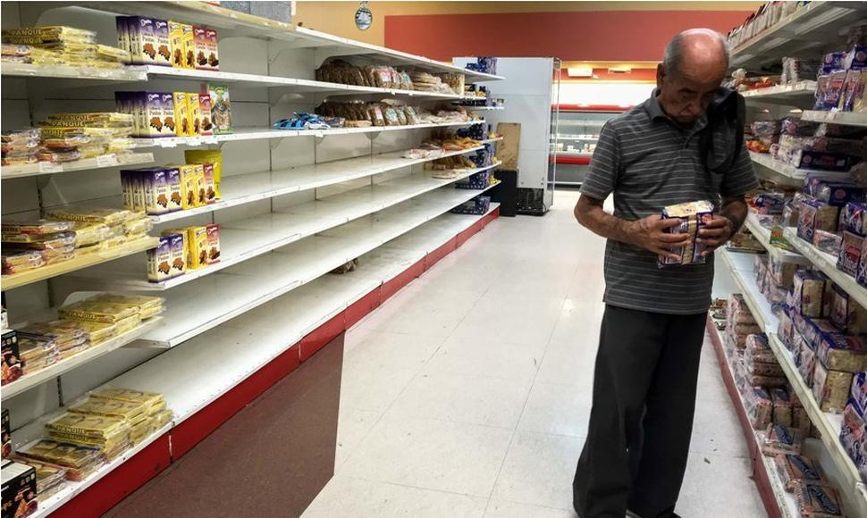

El sector agroalimentario venezolano se encuentra estrechamente vinculado al sistema agroalimentario internacional.
Esta relación comenzó a profundizarse desde 1973, cuando el boom petrolero disparó un brusco incremento de las importaciones de
alimentos que generó un debilitamiento de la producción nacional, y se agudizó todavía más a partir de la apertura neoliberal iniciada en 1989.
El gobierno de Hugo Chávez, que asumió el poder en 1999, impulsó nuevos cambios, orientados básicamente a garantizar la seguridad alimentaria de
la población a través de la creación de empresas estatales de abastecimiento, como Mercal, que podrían jugar un rol fundamental en la definición del
sistema agroalimentario venezolano.

El abastecimiento agroalimentario en Venezuela se caracteriza por haberse estructurado en función del consumo de la población concentrada en
los principales centros urbanos, y ha estado determinado en gran medida por la progresiva vinculación del sector agroalimentario venezolano al sistema
agroalimentario configurado a escala internacional. Este vínculo se tradujo, en la práctica, en un alto grado de dependencia de las importaciones de materias
primas para su procesamiento agroindustrial. De esa forma, el consumo alimentario de las ciudades en las cuales se concentró la población y el patrón internacional
de abastecimiento definieron la configuración del sistema agroalimentario venezolano y, por consiguiente, la estructura de producción agrícola, la agroindustria,
las formas de organización de abastecimiento y el consumo.